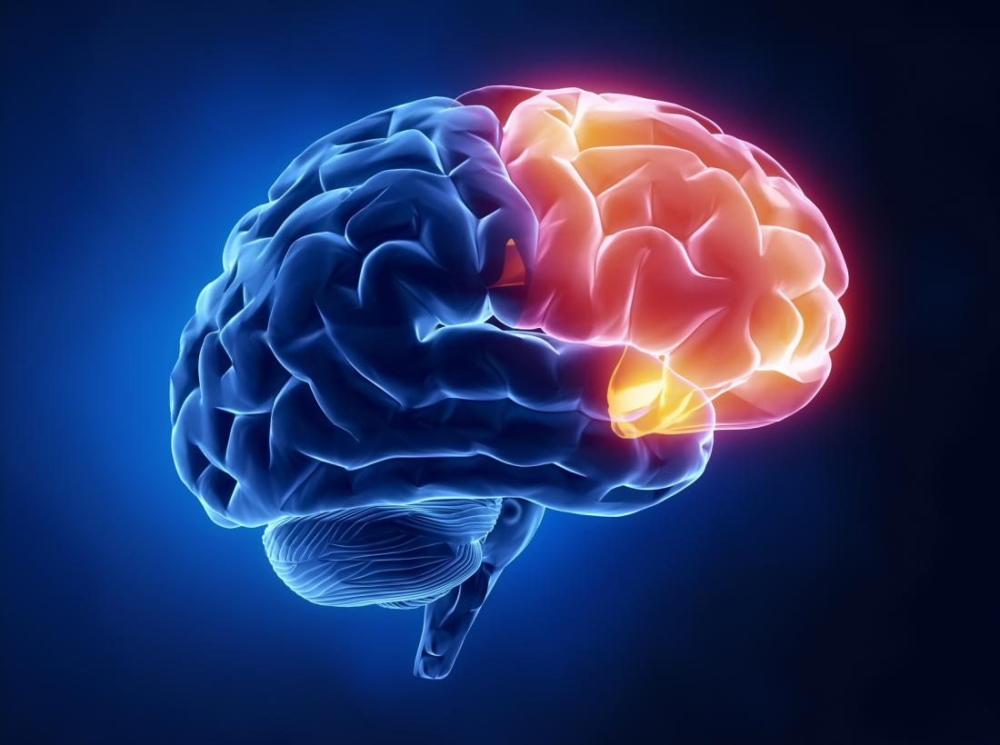

The frontal lobe is the part of the brain that controls important cognitive skills in humans, such as emotional expression, problem solving, memory, language, judgment, and sexual behaviors. It is, in essence, the “control panel” of our personality and our ability to communicate.
